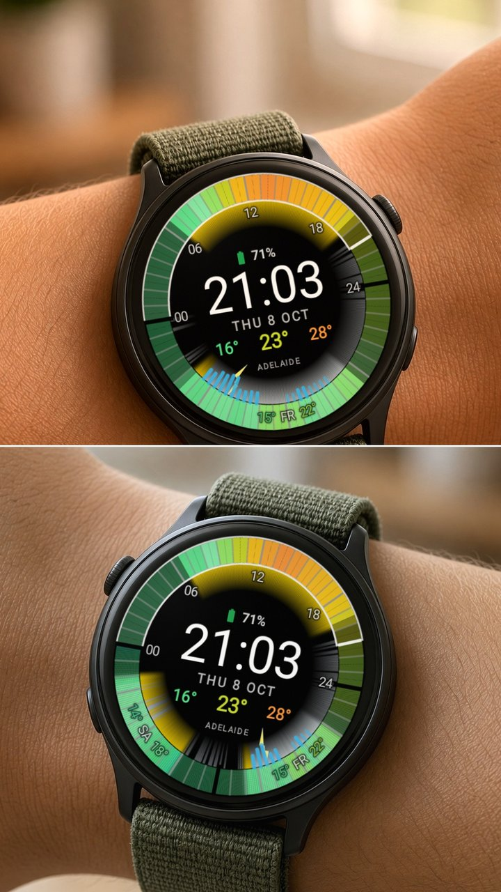

Next days
Turn on Next days in the Look tab and today moves to the top half of the ring. The bottom half shows tomorrow, or the next two days, each with its own temperatures and weather. Two letters mark the weekday, with that day’s low and high beside them. It’s off by default.